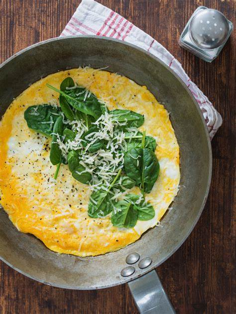

Whatever's-In-The-Fridge Omelette

Description
This one is pretty self-explanatory. Have you got
eggs and some veggies or meat that you need to use up?
If so, keep reading so we can clear out some fridge
space AND put a hearty meal on the table within 15 minutes.
This omelette cooks up quickly with as many or as few
extra bells and whistles as you choose. I like to throw
mushrooms, spinach, and diced tomatoes on mine, but you
might want to add ham, green peppers, onions, or maybe
nothing at all to yours.
This can be a meal all on its own, however it also pairs
well with has browns, sausages, bacon, toast, or some fresh fruit.
Ingredients
- eggs
- shredded cheese
- milk
- butter
- salt
- pepper
- onion powder
- garlic powder
- cayenne pepper
Optional:
- spinach
- mushrooms
- diced tomatoes
Steps
- In a bowl, crack 2-3 eggs. Mix with 3/4 cup milk.
- Melt butter in a pan over medium heat.
- Pour the egg mixture into the pan. Let cook for a few
minutes until bottom starts turning gold.
- Sprinkle salt, ground pepper, and spices of your choice
on the omelette.
- Sprinkle a thin layer of cheese.
- Add veggies and meat, then another layer of cheese.
- Once the cheese has started to melt, fold the edges
of the omelette over the center to close.
- Serve your beautiful Frankenstein's Breakfast on your finest china!